Mostrar código
altura_cm <- c(153,135,140,140,175,138,145,154,152,159,154)
stem(altura_cm)
The decimal point is 1 digit(s) to the right of the |
13 | 58
14 | 005
15 | 23449
16 |
17 | 5Al finalizar este capítulo, el alumno será capaz de:
Los conceptos clave introducidos en este capítulo son: stemplot, distribución de frecuencias, frecuencia absoluta, frecuencia relativa, frecuencia acumulada, diagrama de barras, histograma, intervalo (bin), forma de los datos, distribución simétrica, distribución asimétrica, distribución bimodal, diagrama de caja (boxplot), cuartil, mediana, rango intercuartil (IQR), valor atípico (outlier), beeswarm, violin plot, gráfico de densidad, gráfico de dispersión, correlación, serie temporal, estacionalidad, tendencia, remuestreo, media móvil, matplotlib, seaborn, ggplot2, pandas.
Una imagen vale más que mil palabras, y en el análisis de datos, la visualización es fundamental para entender patrones, distribuciones y relaciones en nuestros datos.
En este capítulo estudiaremos cómo describir conjuntos de datos de forma visual, utilizando varios tipos de gráficos distintos:
Veremos la relación visual entre un histograma y un diagrama de caja, y aprenderemos también a construir tablas de frecuencias en Excel, en Python y en R. Finalmente, veremos algunos otros tipos de gráficos que son útiles para aplicaciones concretas, como los gráficos de densidad.
A lo largo de este capítulo se utilizan las siguientes librerías:
pip install palmerpenguinsinstall.packages(c("palmerpenguins", "ggbeeswarm", "patchwork"))La mayoría forman parte de una instalación estándar de Python o R; palmerpenguins, ggbeeswarm y patchwork deben instalarse la primera vez.
El diagrama de tallo y hojas, también conocido como stemplot, es una herramienta gráfica utilizada en estadística para representar la distribución de un conjunto de datos. Es especialmente útil para conjuntos de datos pequeños y proporciona una forma rápida y efectiva de visualizar la forma de los datos y su dispersión. El stemplot recibe este nombre porque el dibujo que resulta se asemeja a un tallo el que le salen las hojas que son los datos individuales.
Los componentes de un stemplot son:
Tallo: Representa el grupo principal de los valores de los datos. Generalmente, se usa la parte más significativa del número. Por ejemplo, en el número 43, el tallo podría ser 4.
Hojas: Representan los dígitos finales o menos significativos de los valores de los datos. Siguiendo el ejemplo anterior, la hoja sería 3.
Supongamos que queremos medir la altura de un grupo de alumnos de nuestra clase. Éste es nuestro grupo:
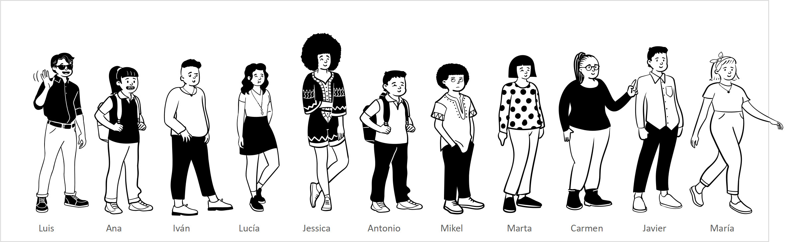
Realizamos la medida de altura de cada persona y registramos los valores en una hoja de cálculo, siguiendo las buenas prácticas que hemos visto al estudiar los datos ordenados.
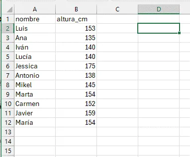
Vamos a utilizar los datos de medidas de altura de nuestro grupo de alumnos. Quitamos el último dígito a la derecha de nuestros valores y colocamos verticalmente los valores resultantes ordenándolos de menor a mayor, y evitando las repeticiones. Para evitar errores en la escala, debemos incluir los valores intermedios aunque no haya ninguno en nuestros datos (en el ejemplo, el valor 16 que correspondería a los 160). Esto forma el “tallo” de nuestro diagrama:
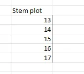
A continuación añadimos las “hojas” en la celda a la derecha, que consisten en los valores que hemos “cortado” de nuestro árbol, uno al lado de otro, incluyendo esta vez los valores repetidos, en orden de menor a mayor. Por ejemplo, para el valor 135, descartamos 13 y utlizamos 5; para el valor 138, descartamos 13 y utilizamos 8, y así sucesivamente para todos los valores.
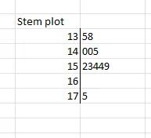
R permite realizar el stemplot mediante la función \(stem()\) de forma automática. Python no incluye entre sus métodos básicos una función para hacer un stemplot, aunque sí la tiene en la librería stemgraphic; importamos de esta librería sólo la función stem_text()
En este capítulo veremos varios ejemplos de código R y Python.
Para un explicación detallada del código, copia el código R o Python y pégalo en Gemini o en ChatGPT (o Copilot). A continuación. da esta instrucción a la IA (puedes copiar y pegar el párrafo):
Actúa como un tutor de programación. Explica este código instrucción a instrucción de forma detallada y sencilla, indicando qué hace cada línea y por qué es necesaria. Usa analogías con Excel o tareas manuales para que sea más fácil de entender.
altura_cm <- c(153,135,140,140,175,138,145,154,152,159,154)
stem(altura_cm)
The decimal point is 1 digit(s) to the right of the |
13 | 58
14 | 005
15 | 23449
16 |
17 | 5from stemgraphic.text import stem_text
altura_cm = [153,135,140,140,175,138,145,154,152,159,154]
stem_text(altura_cm)135
¡
13 | 58
|
14 | 005
|
15 | 23449
|
16 |
|
17 |
| 5
!
175
Key:
17|5 => 17.5x10 = 175.0 | representan los valores base (o tallos), en este caso, las decenas de las alturas.| representan los dígitos adicionales (o hojas). Por ejemplo, en la línea 13 | 58, el tallo es 13 (130), y las hojas son 5 y 8, que corresponden a los datos 135 y 138.El diagrama nos dice que los valores en torno a 150 cm son los más frecuentes, y que hay un valor alto (175) que se separa un poco del resto.
El stemplot es muy sencillo de hacer y nos da una visión rápida y compacta de la distribución de nuestros valores, así como de la posible existencia de valores que se separan del conjunto. Estos valores alejados, que se conocen en inglés como outliers, tienen mucha importancia en el analisis e interpretación de los datos, como veremos más adelante.
La ventaja principal del stemplot es que mantiene los valores originales de las observaciones, y puede hacerse fácilmente con bolígrafo y papel, sin necesidad de más herramientas.
Su principal inconveniente es la elaboración manual (aunque lenguajes como R tienen funciones que lo contruyen de forma automática), y por lo tanto, la dificultad de aplicarlo a volumenes de datos medios o grandes. El uso generalizado de los ordenadores ha hecho que actualmente esta herramienta tenga muy poco uso, y se utilicen en su lugar otras más gráficas y de construcción automática, como el histograma.
Una distribución de frecuencias es una tabla que muestra la frecuencia con la que ocurren los valores diferentes en un conjunto de datos. Esta herramienta es fundamental en la estadística descriptiva y permite resumir y visualizar cómo se distribuyen los datos de manera clara y comprensible. A partir de una tabla de frecuencias se pueden construir diagramas de barra o histogramas para visualizar la tabla de forma gráfica.
Para construir una distribución de frecuencias, agrupamos nuestros valores por intervalos, y contamos el número de observaciones que aparecen en cada intervalo. Los componentes de una distribución de frecuencias son:
las categorías o clases son los intervalos o valores específicos de los datos que se están analizando. Cada categoría representa un rango de valores en caso de datos continuos, o valores específicos en caso de datos discretos.
la frecuencia absoluta es un recuento simple de cuántas veces aparece cada valor en un conjunto de datos.
la frecuencia relativa nos muestra la proporción de cada valor frente al total. Puede expresarse como fracción (entre 0 y 1) o como porcentaje (respecto a 100), y se calcula como: \[ \text{Frecuencia Relativa} = \frac{\text{Frecuencia Absoluta}}{\text{Número Total de Observaciones}} \]
la frecuencia acumulada nos dice cuántas observaciones están por debajo de un cierto valor.
la frecuencia relativa acumulada es la proporción de valores que están por debajo de un cierto valor
Para crear una tabla de frecuencias de la variable altura_cm mediante una tabla dinámica en Excel, sigue estos pasos:
1. Selecciona los Datos
nombre y altura_cm).2. Inserta una tabla dinámica
3. Añade la frecuencia absoluta
altura_cm a la sección Filas.altura_cm a la sección Valores.4. Ajusta la configuración de valores
altura_cm en la sección Valores.5. Añade la frecuencia relativa
altura_cm a la sección Valores. Ahora la variable aparecerá como altura_cm2.6. Ajusta de nuevo la configuración de valores
altura_cm2 en la sección Valores.7. Ordena y formatea
altura_cm en la tabla dinámica.frec_absy frec_rel, o cualquier otro encabezado que te resulte claro y útil.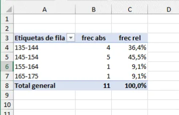
altura_cm <- c(153, 135, 140, 140, 175, 138, 145, 154, 152, 159, 154)
frecuencias <- table(altura_cm)
print(frecuencias)altura_cm
135 138 140 145 152 153 154 159 175
1 1 2 1 1 1 2 1 1 library(dplyr)
df_alturas <- tibble(
altura = c(153, 135, 140, 140, 175, 138, 145, 154, 152, 159, 154)
)
frecuencias <- df_alturas |>
count(altura, sort = TRUE, name = "frecuencia")
print(frecuencias)# A tibble: 9 × 2
altura frecuencia
<dbl> <int>
1 140 2
2 154 2
3 135 1
4 138 1
5 145 1
6 152 1
7 153 1
8 159 1
9 175 1import pandas as pd
altura_cm = [153,135,140,140,175,138,145,154,152,159,154]
frecuencias = pd.Series(altura_cm).value_counts()
print(frecuencias)140 2
154 2
153 1
175 1
135 1
138 1
145 1
152 1
159 1
Name: count, dtype: int64Con un poco más de código podemos hacer la tabla agrupando los valores en clases de amplitud 10, con las frecuencias absolutas y relativas. Es un poco más complicado, tómate tu tiempo para entender cada paso de las instrucciones.
# 1. Definir los datos
altura_cm <- c(153, 135, 140, 140, 175, 138, 145, 154, 152, 159, 154)
# 2. Crear los cortes (bins) como en NumPy
limite_inf <- floor(min(altura_cm) / 10) * 10
limite_sup <- floor(max(altura_cm) / 10) * 10 + 10
bins <- seq(limite_inf, limite_sup + 10, by = 10)
# 3. Agrupar los datos en los intervalos
intervalos <- cut(altura_cm, breaks = bins, right = FALSE)
# 4. Crear la tabla de frecuencias
frecuencia <- as.vector(table(intervalos))
nombres_intervalos <- levels(intervalos)
# 5. Construir el data.frame con los cálculos
df <- data.frame(
Intervalo = nombres_intervalos,
Frecuencia = frecuencia
)
# Cálculos de acumulados y relativos
df$Frec_acum <- cumsum(df$Frecuencia)
df$Frec_rel_pct <- round((df$Frecuencia / sum(df$Frecuencia)) * 100, 2)
df$Frec_rel_acum_pct <- cumsum(df$Frec_rel_pct)
print(df) Intervalo Frecuencia Frec_acum Frec_rel_pct Frec_rel_acum_pct
1 [130,140) 2 2 18.18 18.18
2 [140,150) 3 5 27.27 45.45
3 [150,160) 5 10 45.45 90.90
4 [160,170) 0 10 0.00 90.90
5 [170,180) 1 11 9.09 99.99
6 [180,190) 0 11 0.00 99.99library(dplyr)
altura_cm <- c(153, 135, 140, 140, 175, 138, 145, 154, 152, 159, 154)
bins <- seq(
from = floor(min(altura_cm) / 10) * 10,
to = floor(max(altura_cm) / 10) * 10 + 20,
by = 10
)
tabla_frecuencias <- tibble(altura = altura_cm) |>
mutate(
intervalo = cut(altura, breaks = bins, right = FALSE)
) |>
count(intervalo, name = "Frecuencia", .drop=FALSE) |>
mutate(
Frec_acum_pct= cumsum(Frecuencia),
Frec_rel_pct = round((Frecuencia / sum(Frecuencia)) * 100, 2),
Frec_rel_acum_pct = cumsum(Frec_rel_pct)
)
print(tabla_frecuencias)# A tibble: 6 × 5
intervalo Frecuencia Frec_acum_pct Frec_rel_pct Frec_rel_acum_pct
<fct> <int> <int> <dbl> <dbl>
1 [130,140) 2 2 18.2 18.2
2 [140,150) 3 5 27.3 45.4
3 [150,160) 5 10 45.4 90.9
4 [160,170) 0 10 0 90.9
5 [170,180) 1 11 9.09 100.0
6 [180,190) 0 11 0 100.0import pandas as pd
import numpy as np
altura_cm = [153,135,140,140,175,138,145,154,152,159,154]
serie = pd.Series(altura_cm)
# Crear intervalos automáticamente con amplitud 10
bins = np.arange(min(altura_cm)//10*10,
max(altura_cm)//10*10 + 20, 10)
# Agrupar y contar
tabla = pd.cut(serie, bins=bins).value_counts(sort=False)
# Convertir a DataFrame con acumulados y relativos
df = tabla.to_frame(name='Frecuencia')
df['Frec_acum_%'] = df['Frecuencia'].cumsum()
# escribimos la instrucción en dos lineas usando los paréntesis
df['Frec_rel_%'] = (
(df['Frecuencia'] / df['Frecuencia'].sum() * 100).round(2)
)
df['Frec_rel_acum_%'] = df['Frec_rel_%'].cumsum()
print(df) Frecuencia Frec_acum_% Frec_rel_% Frec_rel_acum_%
(130, 140] 4 4 36.36 36.36
(140, 150] 1 5 9.09 45.45
(150, 160] 5 10 45.45 90.90
(160, 170] 0 10 0.00 90.90
(170, 180] 1 11 9.09 99.99Como ves en el resultado, a veces se utilizan los símbolos ( y [ para definir los intervalos, tal como se hace en matemáticas.
( se utiliza para denotar un intervalo abierto. El límite correspondiente no está incluido en el intervalo.[ se utiliza para denotar un intervalo cerrado o semiabierto. El límite correspondiente sí está incluido en el intervalo.Ejemplos:
Si comparamos los dos métodos que hemos utilizado para construir la tabla de frecuencias, vemos que:
Si otra persona quisiera modificar la tabla, le sería fácil editar el código y relanzar el script, mientras que en Excel no sería fácil asegurarse de todos y cada uno de los pasos y clicks de ratón que hemos dado para construir y formatear la tabla.
Esta es una de las principales razones de la conveniencia del aprendizaje de Python incluso para las actividades más sencillas.
En la tabla de frecuencias anterior, calcular frecuencia absoluta acumulada y frecuencia relativa acumulada en Excel, e incluirlas en la tabla como dos columnas adicionales. La frecuencia relativa acumulada nos permitirá crear diagramas de Pareto, muy útiles en los procesos de mejora de calidad.
Cuando nuestra variable es discreta, podemos representar las frecuencias de cada valor de forma gráfica utilizando un diagrama de barras. Este diagrama utiliza barras rectangulares para representar la frecuencia de cada categoría.
Este gráfico es muy utilizado para representar, por ejemplo, resultados de encuestas, como el número de votos que han obtenido los diferentes partidos políticos en unas elecciones, o tablas discretas, como los kilos fabricados por meses en una fábrica.
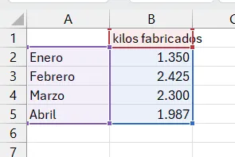
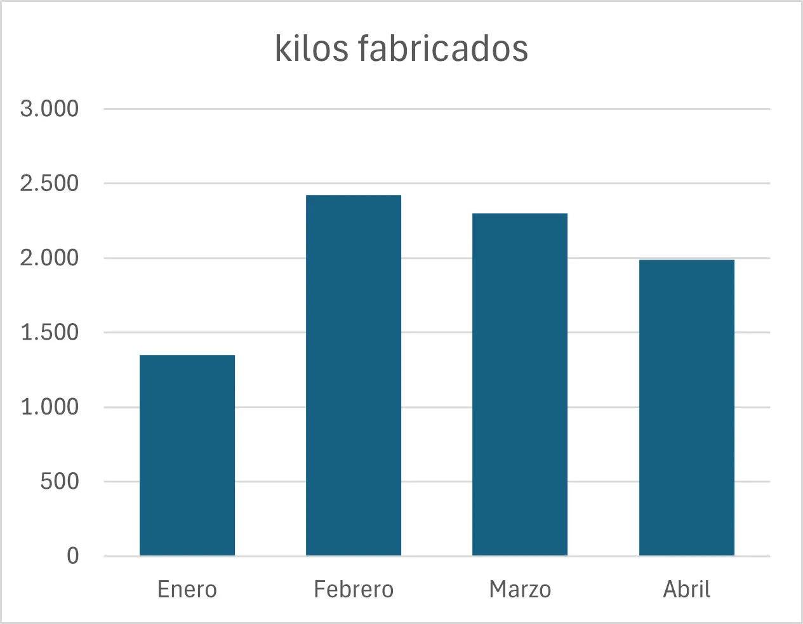
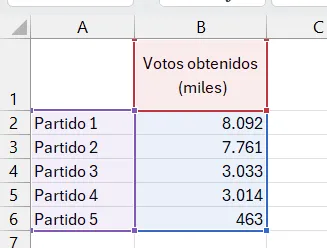
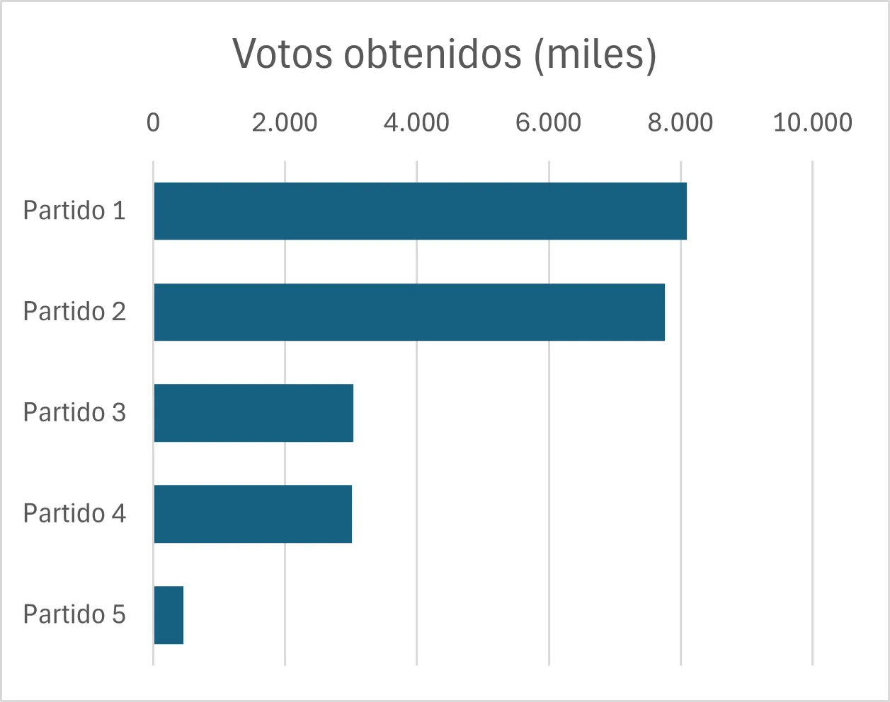
Para visualizar las variables continuas se utiliza el histograma, que es un diagrama que utiliza las barras rectangulares para hacer un gráfico de la distribución de valores continuos, previamente agrupados en intervalos (bins en inglés), tal como se ha hecho en la tabla de frecuencias.
Usaremos el ejemplo de la altura en cm. de un grupo de alumnos.
Podemos utilizar dos métodos para hacer un histograma en Excel
altura_cm, en este caso, la columna B.Insertar, seleccionamos el icono Seleccionar gráficos de estadísticaHistograma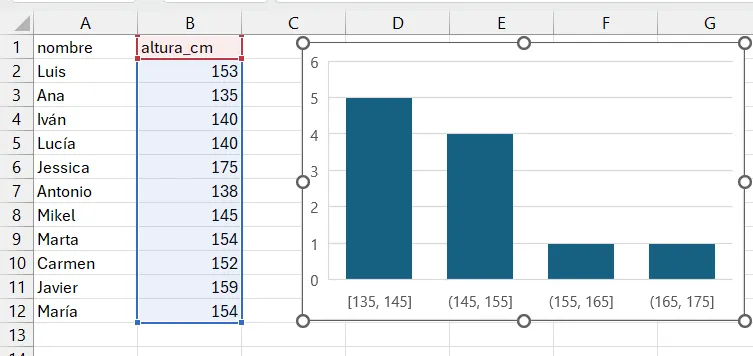
Excel calcula automáticamente la amplitud de los intervalos y el número de columnas; estas opciones pueden modificarse seleccionando con el botón derecho del ratón el elemento a modificar. En este caso, utilizamos estas opciones:
Dar formato a serie de datos, Opciones de serie, Ancho del rango= 50%Dar formato al eje, Opciones de eje, Ancho del rango = 10La descripción de los intervalos utiliza los mismos símbolos que hemos visto en las tablas de frecuencias de Python.
En el momento de escribir este manual, Excel no permite hacer histogramas múltiples ni agrupados por otra variable, por lo que para diseños más complejos, no hay más remedio que recurrir a otras opciones como las tablas dinámicas de Excel o, mejor aún, Python o R.
La tabla dinámica que hemos construido en Excel ha convertido nuestra variable continua, altura_cm, en una tabla de valores discretos, al agrupar los valores en intervalos. En Excel podemos representar las frecuencias absolutas de nuestra tabla gráficamente, insertando un gráfico de barras a partir de la tabla:
InsertarOpcionalmente, aplicamos las siguientes opciones de formato:
Ancho del rango el valor \(50\%\) para ensanchar las barras.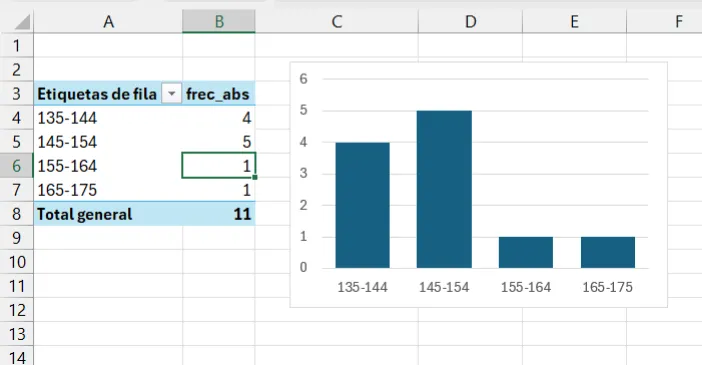
Al utiizar la tabla dinámica para construir el gráfico, Excel utiliza las categorías de la tabla dinámica. Dado que estas categorías (los intervalos que ha formado la tabla dinámica) son discretas, Excel utiliza el resultado de la tabla dinámica para hacer el gráfico con un diagrama de barras. No es posible insertar un histograma a partir de una tabla dinámica.
En Python, las librerías matplotlib y seaborn son las herramientas estándar para crear gráficos.
plt): Es la base, una librería de bajo nivel que da un control muy granular sobre cada aspecto del gráfico.sns): Construye sobre matplotlib, ofreciendo una interfaz de alto nivel para crear gráficos estadísticos complejos y estéticamente agradables con menos código. Es ideal para explorar distribuciones, relaciones entre variables y comparaciones entre grupos.Siempre importamos ambas, ya que seaborn a menudo usa funciones de matplotlib para mostrar y personalizar los gráficos (como plt.title() para el título o plt.show() para mostrar el gráfico).
En R, usaremos las funciones de base y la librería ggplot2.
Las funciones de histograma de Python y R permiten construir el histograma directamente sin necesidad de hacer previamente una tabla de frecuencias (en realidad, la tabla de frecuencias se calcula internamente). Es mucho más sencillo utilizar estas funciones, ya que el código se simplifica mucho.
Vemos que los gráficos no son idénticos a pesar de provenir de los mismos datos, porque la construcción de los intervalos subyacente y el aspecto de las barras pueden ser ligeramente diferentes. Esto no debe preocuparnos, porque el aspecto general de la distribución de los datos es el mismo.
En la fase de exploración nos importa más entender estas propiedades de los datos (aspecto, forma de la distribución) que la precisión en la construcción del gráfico.
Comenzamos con el histograma de nuestros datos de altura:
altura_cm <- c(153,135,140,140,175,138,145,154,152,159,154)
hist(altura_cm,
main = "Distribución de la altura de los alumnos",
xlab = "Altura (cm)",
ylab = "Frecuencia")
library(ggplot2)
altura_cm <- c(153,135,140,140,175,138,145,154,152,159,154)
df_altura <- data.frame(altura_cm = altura_cm)
ggplot(df_altura, aes(x = altura_cm)) +
geom_histogram(bins = 6) +
labs(
title = "Distribución de la altura de los alumnos",
x = "Altura (cm)",
y = "Frecuencia"
) +
theme_minimal()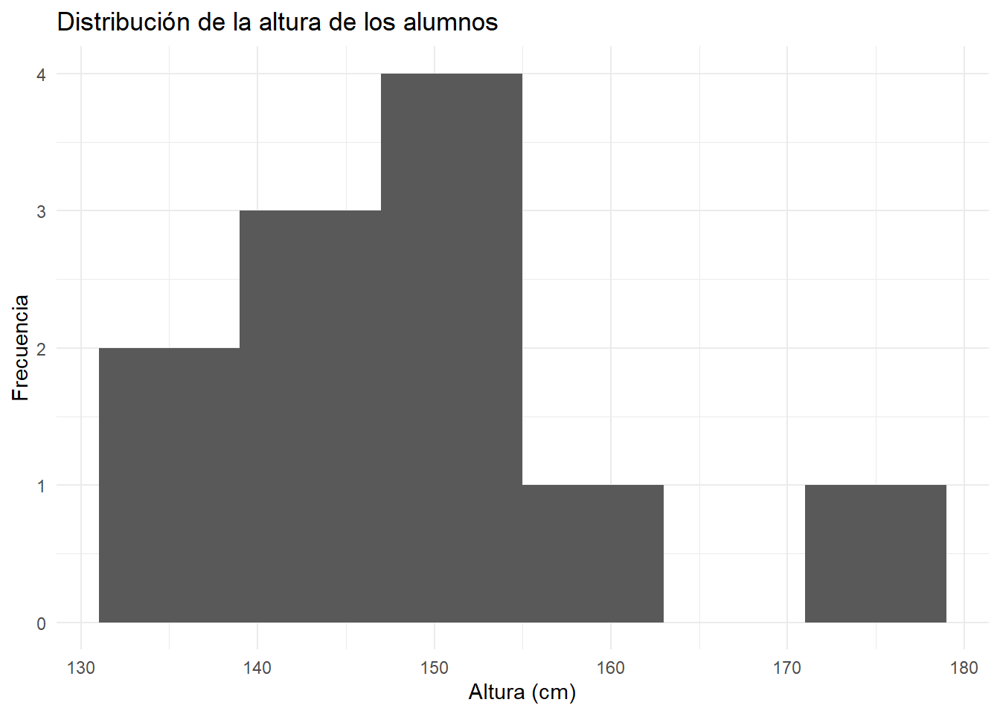
import matplotlib.pyplot as plt
altura_cm = [153,135,140,140,175,138,145,154,152,159,154]
plt.hist(altura_cm)
plt.title("Distribución de la altura de los alumnos")
plt.xlabel("Altura (cm)")
plt.ylabel("Frecuencia")
plt.show()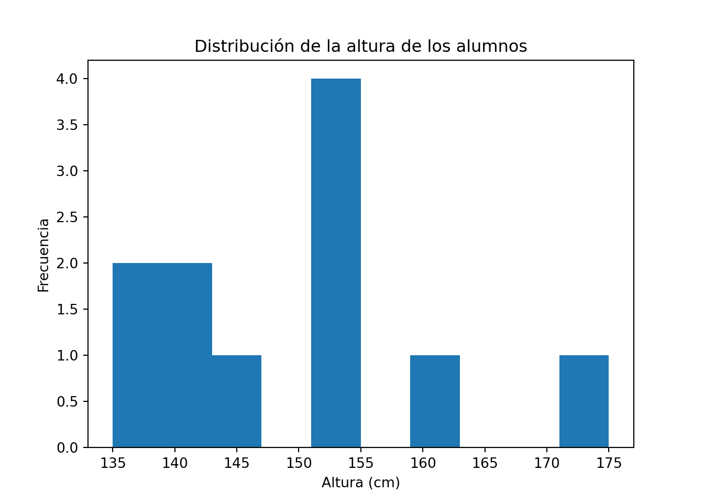
import pandas as pd
import seaborn as sns
import matplotlib.pyplot as plt
altura_cm = [153,135,140,140,175,138,145,154,152,159,154]
df_altura = pd.DataFrame({'altura_cm': altura_cm})
sns.histplot(df_altura['altura_cm'])
plt.title("Distribución de la altura de los alumnos")
plt.xlabel("Altura (cm)")
plt.ylabel("Frecuencia")
plt.show()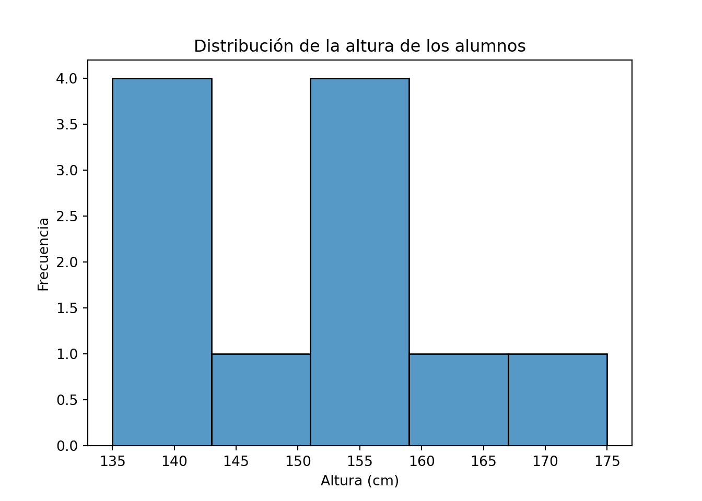
Con solo 11 observaciones el histograma es poco informativo. Cuando tenemos más datos, el histograma muestra con mucha más claridad la forma de la distribución. Usaremos a partir de ahora el dataset penguins, que contiene medidas de 344 pingüinos de tres especies del archipiélago Palmer (Antártida).
Para usar el dataset penguins es necesario instalar la librería correspondiente la primera vez:
pip install palmerpenguinsinstall.packages("palmerpenguins")library(palmerpenguins)
hist(penguins$flipper_length_mm,
main = "Distribución de la longitud de aleta",
xlab = "Longitud de aleta (mm)",
ylab = "Frecuencia")
library(palmerpenguins)
library(ggplot2)
ggplot(penguins, aes(x = flipper_length_mm)) +
geom_histogram(bins = 20) +
labs(
title = "Distribución de la longitud de aleta",
x = "Longitud de aleta (mm)",
y = "Frecuencia"
) +
theme_minimal()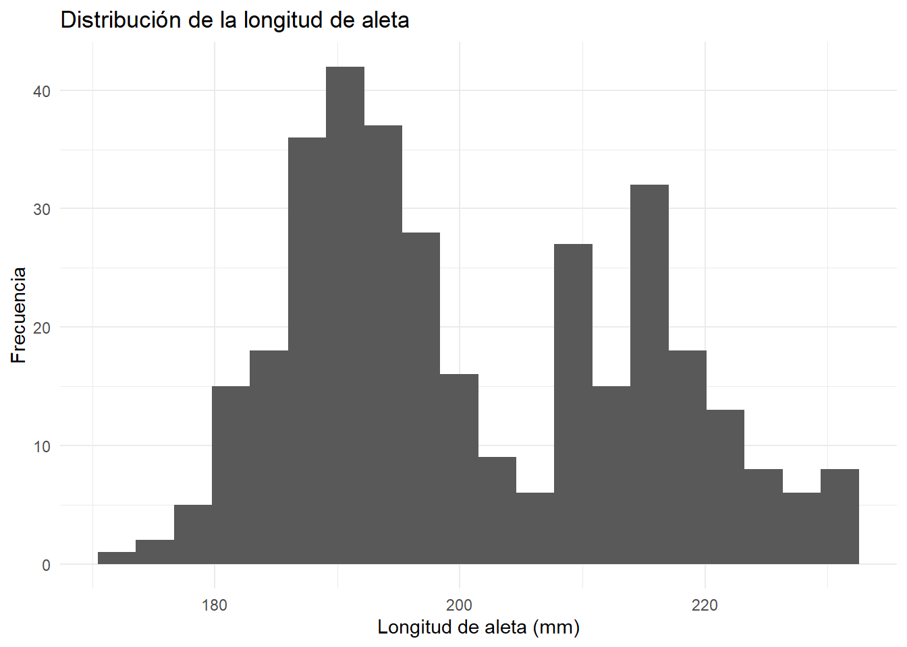
from palmerpenguins import load_penguins
import matplotlib.pyplot as plt
penguins = load_penguins()
penguins['flipper_length_mm'].dropna().hist()
plt.title("Distribución de la longitud de aleta")
plt.xlabel("Longitud de aleta (mm)")
plt.ylabel("Frecuencia")
plt.show()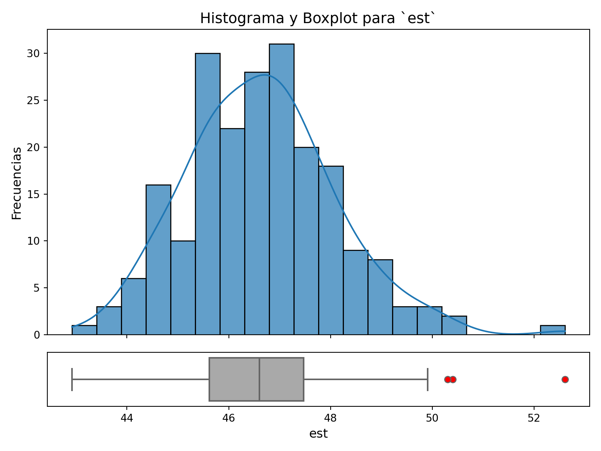
from palmerpenguins import load_penguins
import seaborn as sns
import matplotlib.pyplot as plt
penguins = load_penguins()
sns.histplot(penguins['flipper_length_mm'].dropna())
plt.title("Distribución de la longitud de aleta")
plt.xlabel("Longitud de aleta (mm)")
plt.ylabel("Frecuencia")
plt.show()
Con 344 observaciones el histograma muestra una forma mucho más clara. En la sección siguiente aprenderemos a interpretar esta forma.
¿Por qué es importante conocer la forma de los datos? Porque la forma nos dice si los datos son homogéneos o si hay grupos distintos mezclados, y eso cambia completamente la interpretación. Imaginemos que medimos la altura de los alumnos de un aula y obtenemos el histograma que ya conocemos: una distribución centrada en torno a 150 cm, aproximadamente simétrica. Ahora imaginemos que en esa misma aula hay tres alumnos de 16 años mezclados con alumnos de 12 años: el histograma mostraría dos grupos claramente separados, y la forma nos estaría diciendo que no estamos ante una población homogénea sino ante dos grupos distintos. Si no miramos la forma y nos quedamos solo con un número resumen, perderíamos esa información fundamental.
Lo mismo ocurre en la industria: si mezclamos en una tabla de datos la producción de dos líneas con ajustes diferentes, o de dos turnos con operarios distintos, o de dos épocas del año con materias primas diferentes, el histograma nos lo mostrará. La forma de los datos es la primera señal de que algo merece una investigación más profunda, antes de hacer ningún cálculo. En el capítulo 8 veremos un caso real de fabricación de queso camembert en el que la forma de los datos nos dará la primera pista sobre una desviación estacional que solo se explica cuando analizamos los datos en el tiempo.
Cuando la mayoría de los valores se concentran en el centro y las frecuencias disminuyen de forma equilibrada hacia ambos lados, decimos que la distribución es simétrica. Es el caso más frecuente en medidas de procesos industriales controlados: pesos, temperaturas, extractos secos. El histograma de la longitud de aleta de los pingüinos que acabamos de ver es un buen ejemplo de distribución aproximadamente simétrica.
Esta forma recuerda a una campana, y es la que en estadística se conoce como distribución normal o campana de Gauss. Volveremos sobre este concepto en el capítulo 7, cuando estudiemos la media y la desviación típica.
No todas las distribuciones son simétricas. Cuando la mayoría de los valores se concentran en un extremo y la frecuencia disminuye lentamente hacia el otro, decimos que la distribución es asimétrica. Un ejemplo muy claro es la distribución de goles por partido en La Liga. El dataset laliga_resultados2425.csv contiene los resultados de los 380 partidos de la temporada 2024-25 de la Primera División de fútbol española, con el marcador de cada equipo al final del partido. Se ha elegido este conjunto de datos por su familiaridad para cualquier alumno español y porque la distribución de goles por partido es un ejemplo clásico de asimetría positiva: la mayoría de los partidos terminan con pocos goles, pero ocasionalmente aparecen resultados muy abultados que forman una cola hacia la derecha.
Los resultados proceden de los registros oficiales de LaLiga.
laliga <- read.csv2("datos/laliga_resultados2425.csv")
laliga$goles_totales <- laliga$goles_local + laliga$goles_visitante
hist(laliga$goles_totales,
breaks = 10,
main = "Distribución de goles por partido. La Liga 2024-25",
xlab = "Goles por partido",
ylab = "Número de partidos")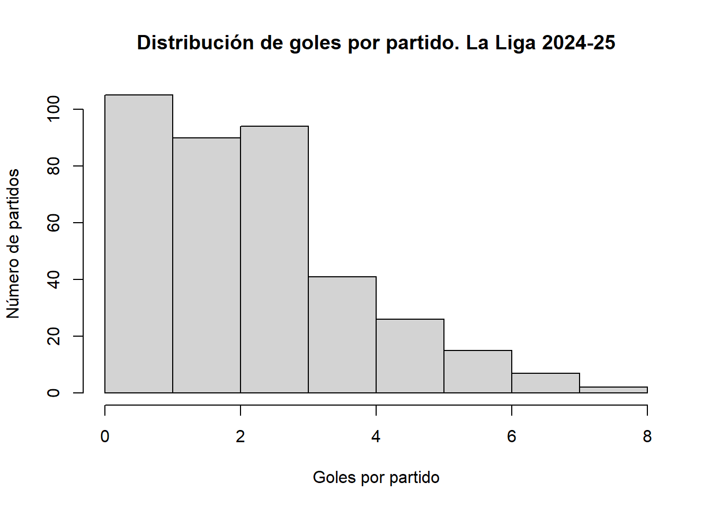
import pandas as pd
import seaborn as sns
import matplotlib.pyplot as plt
laliga = pd.read_csv("datos/laliga_resultados2425.csv", sep=';')
laliga['goles_totales'] = laliga['goles_local'] + laliga['goles_visitante']
sns.histplot(laliga['goles_totales'], bins=10, discrete=True)
plt.xlabel("Goles por partido")
plt.ylabel("Número de partidos")
plt.title("Distribución de goles por partido. La Liga 2024-25")
plt.show()
La mayoría de los partidos terminan con pocos goles, y los partidos con muchos goles son cada vez más raros. La distribución tiene una cola larga hacia la derecha: esto es lo que se conoce como asimetría positiva o sesgo positivo. El valor más frecuente (la moda) es más bajo que el valor central, y hay algunos partidos con resultados muy abultados que forman esa cola. En la industria alimentaria encontraremos distribuciones asimétricas positivas con frecuencia en variables como los recuentos de bacterias o los tiempos de avería de una máquina, donde la mayoría de los valores son bajos pero ocasionalmente aparecen valores muy altos.
Cuando la cola es hacia la derecha (valores altos poco frecuentes) hablamos de asimetría positiva. Cuando la cola es hacia la izquierda (valores bajos poco frecuentes) hablamos de asimetría negativa. En la práctica industrial, la asimetría positiva es mucho más frecuente que la negativa.
En ocasiones el histograma muestra dos picos claramente diferenciados en lugar de uno. Esto se conoce como distribución bimodal y suele indicar que los datos provienen de dos grupos distintos que se han mezclado. Si volvemos al histograma de la longitud de aleta de los pingüinos y coloreamos por especie, vemos que lo que parecía una distribución aproximadamente simétrica es en realidad la mezcla de dos grupos:
library(palmerpenguins)
library(ggplot2)
ggplot(penguins, aes(x = flipper_length_mm, fill = species)) +
geom_histogram(bins = 20, alpha = 0.6, position = "identity") +
labs(
title = "Distribución de la longitud de aleta por especie",
x = "Longitud de aleta (mm)",
y = "Frecuencia",
fill = "Especie"
) +
theme_minimal()
from palmerpenguins import load_penguins
import seaborn as sns
import matplotlib.pyplot as plt
penguins = load_penguins()
sns.histplot(
data=penguins,
x='flipper_length_mm',
hue='species',
bins=20
)
plt.xlabel("Longitud de aleta (mm)")
plt.ylabel("Frecuencia")
plt.title("Distribución de la longitud de aleta por especie")
plt.show()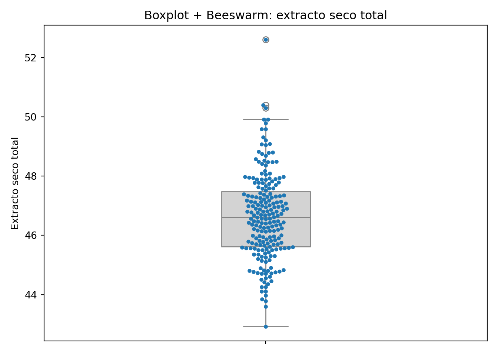
Cuando en un proceso industrial aparece una distribución bimodal, es casi siempre una señal de que hay dos condiciones de proceso distintas mezcladas en los datos: dos máquinas, dos turnos, dos proveedores de materia prima o dos épocas del año con comportamientos diferentes. Identificar y separar esos grupos es uno de los primeros pasos del análisis.
Ya hemos visto en la sección del stemplot que algunos valores se separan claramente del resto. Estos valores, que llamamos valores atípicos o outliers, afectan a la forma del histograma añadiendo barras aisladas en los extremos. Son importantes porque pueden indicar errores en la toma de datos, condiciones excepcionales del proceso, o simplemente la variabilidad natural de algunos fenómenos.
La presencia de valores extremos es uno de los motivos por los que la exploración gráfica siempre debe preceder al cálculo de estadísticos. Como veremos en el capítulo 7, los valores extremos tienen una influencia desproporcionada sobre la media y la desviación típica, y pueden llevar a conclusiones erróneas si no se han detectado previamente.
En el capítulo siguiente veremos cómo la forma de los datos se refleja también en el diagrama de caja, y cómo la elección del estadístico más adecuado depende precisamente de esta forma.
Este gráfico fue creado por el estadístico John Tukey en 1977, y es una herramienta fundamental en la exploración de datos. Se basa en el conjunto de cuartiles: si dividimos un grupo de datos ordenados en cuatro partes iguales mediante tres puntos de corte, llamamos primer cuartil o \(Q1\) al valor que se sitúa en el 25%, segundo cuartil o \(Q2\) al valor que se sitúa en el centro (50%), y tercer cuartil o \(Q3\) al punto que se sitúa en el 75% de los datos. A estos tres valores añadimos el mínimo y el máximo, y tenemos un conjunto de cinco números que nos permiten describir la forma de la distribución con cierta precisión. El segundo cuartil (\(Q2\)), que corresponde al 50% de los datos, se conoce habitualmente como mediana. El valor resultante de restar \(Q3-Q1\) es lo que se conoce como rango intercuartil o \(IQR\), y es una medida de la dispersión de la distribución.
El diagrama de caja, también conocido como boxplot, es un gráfico que permite resumir las características principales de un conjunto de datos utilizando estos cinco números. Sus ventajas son:
La construcción de un diagrama de caja es como sigue:

Microsoft Excel no dispone de un diseño de gráficos de caja que sea práctico, por lo que recurriremos siempre a Python o R para realizarlos.
Empecemos con nuestros datos de altura. Con solo 11 observaciones, el boxplot nos da un resumen numérico correcto, pero oculta la estructura real de los datos:
altura_cm <- c(153,135,140,140,175,138,145,154,152,159,154)
boxplot(altura_cm,
ylab = "Altura (cm)",
main = "Boxplot de la altura de los alumnos")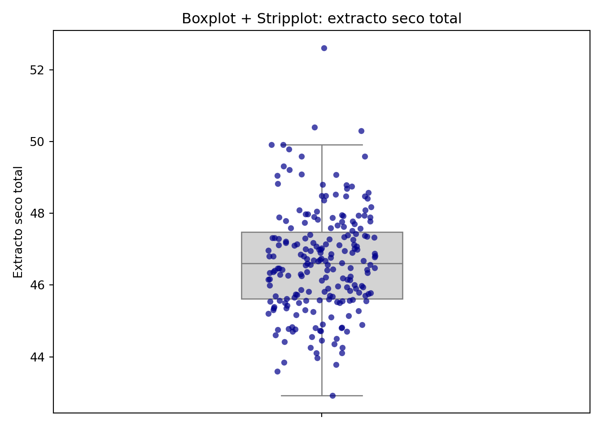
import pandas as pd
import seaborn as sns
import matplotlib.pyplot as plt
altura_cm = [153,135,140,140,175,138,145,154,152,159,154]
df_altura = pd.DataFrame({'altura_cm': altura_cm})
sns.boxplot(data=df_altura, y='altura_cm')
plt.ylabel("Altura (cm)")
plt.title("Boxplot de la altura de los alumnos")
plt.show()
El boxplot nos indica que hay un valor alto que se separa del resto (175 cm), y que la distribución es ligeramente asimétrica. Pero con solo 11 valores, ¿podemos fiarnos de este resumen? La caja representa el 50% central de los datos, pero ese 50% son apenas 5 o 6 alumnos. En estos casos es mucho más informativo mostrar los puntos individuales directamente, usando un dotplot:
altura_cm <- c(153,135,140,140,175,138,145,154,152,159,154)
stripchart(altura_cm,
method = "stack",
vertical = TRUE,
pch = 19,
ylab = "Altura (cm)",
main = "Dotplot de la altura de los alumnos")
import pandas as pd
import seaborn as sns
import matplotlib.pyplot as plt
altura_cm = [153,135,140,140,175,138,145,154,152,159,154]
df_altura = pd.DataFrame({'altura_cm': altura_cm})
sns.stripplot(data=df_altura, y='altura_cm', jitter=False, size=8)
plt.ylabel("Altura (cm)")
plt.title("Dotplot de la altura de los alumnos")
plt.show()
Con el dotplot vemos exactamente cuántos alumnos hay en cada valor y dónde se concentran, información que el boxplot comprimía en una caja. La regla práctica es sencilla: con pocos datos, el dotplot es más informativo que el boxplot; el boxplot cobra todo su sentido cuando tenemos muchas observaciones.
Con un dataset más grande el boxplot muestra toda su utilidad. Usaremos la longitud de aleta del dataset penguins. Este dataset fue recopilado por la bióloga Kristen Gorman junto al equipo de la estación de investigación Palmer, en la Antártida, entre 2007 y 2009, y publicado en un estudio sobre dimorfismo sexual en pingüinos del género Pygoscelis [1]. Posteriormente, Allison Horst, Alison Hill y Kristen Gorman lo empaquetaron como dataset de referencia para la enseñanza de estadística y visualización de datos, como alternativa al histórico dataset iris de Ronald Fisher. Contiene medidas morfológicas (longitud y profundidad del pico, longitud de aleta y peso corporal) de 344 pingüinos de tres especies (Adelie, Chinstrap y Gentoo) recogidas en tres islas del archipiélago Palmer. Su tamaño moderado, la presencia de valores ausentes reales, la existencia de grupos naturales con solapamiento parcial y la riqueza de relaciones entre variables lo han convertido en uno de los datasets estándar tanto en Python como en R.
library(palmerpenguins)
boxplot(penguins$flipper_length_mm,
ylab = "Longitud de aleta (mm)",
main = "Boxplot de la longitud de aleta")
from palmerpenguins import load_penguins
import seaborn as sns
import matplotlib.pyplot as plt
penguins = load_penguins()
sns.boxplot(data=penguins, y='flipper_length_mm')
plt.ylabel("Longitud de aleta (mm)")
plt.title("Boxplot de la longitud de aleta")
plt.show()
La forma que vimos en el histograma se refleja directamente en el boxplot. En una distribución simétrica, la mediana está centrada dentro de la caja y los dos bigotes tienen una longitud similar. En una distribución asimétrica, la mediana se desplaza hacia uno de los extremos de la caja y los bigotes tienen longitudes desiguales.
Comparemos el boxplot de la longitud de aleta de penguins (distribución aproximadamente simétrica) con el boxplot de los goles por partido en La Liga (distribución asimétrica positiva):
library(palmerpenguins)
laliga <- read.csv2("datos/laliga_resultados2425.csv")
laliga$goles_totales <- laliga$goles_local + laliga$goles_visitante
par(mfrow = c(1, 2))
boxplot(penguins$flipper_length_mm,
main = "Longitud de aleta (simétrica)",
ylab = "mm")
boxplot(laliga$goles_totales,
main = "Goles por partido (asimétrica positiva)",
ylab = "Goles")
par(mfrow = c(1, 1))from palmerpenguins import load_penguins
import pandas as pd
import seaborn as sns
import matplotlib.pyplot as plt
penguins = load_penguins()
laliga = pd.read_csv("datos/laliga_resultados2425.csv", sep=';')
laliga['goles_totales'] = laliga['goles_local'] + laliga['goles_visitante']
fig, (ax1, ax2) = plt.subplots(1, 2, figsize=(10, 5))
sns.boxplot(data=penguins, y='flipper_length_mm', ax=ax1)
ax1.set_title("Longitud de aleta (simétrica)")
ax1.set_ylabel("mm")
sns.boxplot(data=laliga, y='goles_totales', ax=ax2)
ax2.set_title("Goles por partido (asimétrica positiva)")
ax2.set_ylabel("Goles")
plt.tight_layout()
plt.show()
En el boxplot de los goles vemos claramente la asimetría positiva: la mediana está desplazada hacia la parte inferior de la caja, el bigote superior es mucho más largo que el inferior, y hay varios valores atípicos en la parte alta. En el capítulo 8 veremos cómo esta misma lectura del boxplot nos ayudará a interpretar la variabilidad estacional del extracto seco en la fabricación de queso camembert.
Una de las aplicaciones más útiles del boxplot es la comparación de distribuciones entre grupos. Para ello simplemente indicamos a Python o R qué variable queremos usar como agrupación. Usamos penguins para comparar la longitud de aleta por especie:
library(palmerpenguins)
boxplot(flipper_length_mm ~ species,
data = penguins,
xlab = "Especie",
ylab = "Longitud de aleta (mm)",
main = "Longitud de aleta por especie")
from palmerpenguins import load_penguins
import seaborn as sns
import matplotlib.pyplot as plt
penguins = load_penguins()
sns.boxplot(data=penguins, x='species', y='flipper_length_mm')
plt.xlabel("Especie")
plt.ylabel("Longitud de aleta (mm)")
plt.title("Longitud de aleta por especie")
plt.show()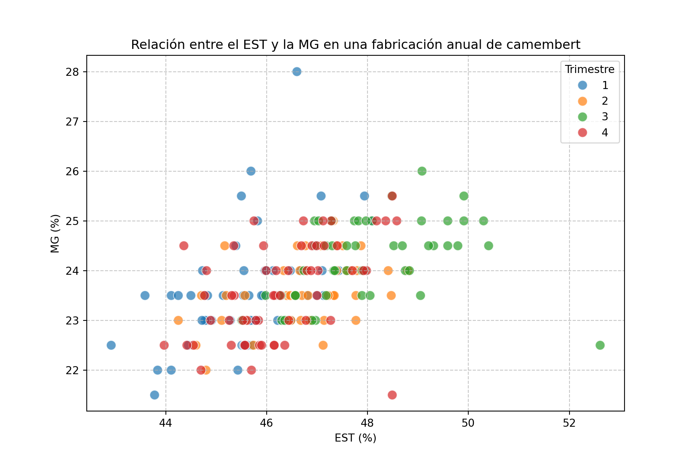
Cuando la caja de un grupo se sitúa claramente por encima o por debajo de la caja de otro grupo, las diferencias entre ellos son visualmente significativas. En este caso, los pingüinos Gentoo tienen aletas notablemente más largas que los Adelie y los Chinstrap. En el capítulo 8 usaremos este mismo tipo de gráfico para comparar la composición del queso camembert mes a mes a lo largo del año.
Resulta muy útil comprender visualmente la relación entre el boxplot y el histograma para entender la distribución de los datos. La caja del boxplot se corresponde con el 50% central de los datos, y la línea media representa la mediana. En el gráfico siguiente mostramos ambas representaciones de forma simultánea para la longitud de aleta de penguins:
library(palmerpenguins)
library(ggplot2)
library(patchwork)
p_hist <- ggplot(penguins, aes(x = flipper_length_mm)) +
geom_histogram(bins = 20, fill = "steelblue", alpha = 0.7, color = "black") +
geom_density(aes(y = after_stat(count)), color = "darkblue", linewidth = 1) +
labs(title = "Histograma y Boxplot: longitud de aleta (penguins)",
y = "Frecuencias") +
theme_bw() +
theme(axis.title.x = element_blank(), axis.text.x = element_blank())
p_box <- ggplot(penguins, aes(x = flipper_length_mm)) +
geom_boxplot(fill = "darkgrey", outlier.color = "red") +
labs(x = "Longitud de aleta (mm)") +
theme_bw() +
theme(axis.text.y = element_blank(), axis.ticks.y = element_blank(),
axis.title.y = element_blank())
p_hist / p_box + plot_layout(heights = c(5, 1))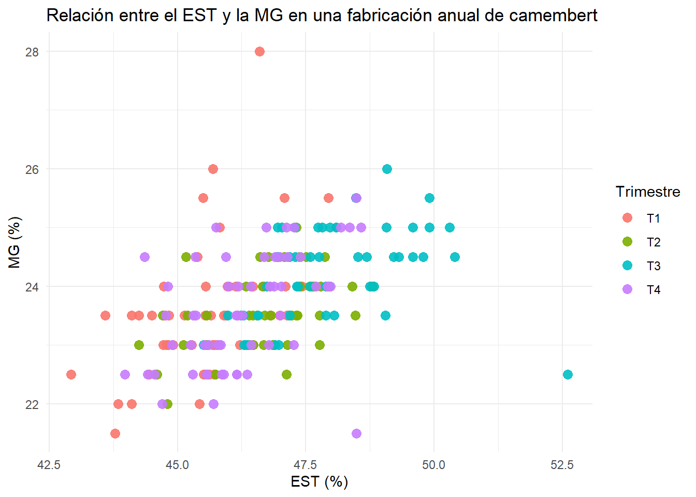
from palmerpenguins import load_penguins
import matplotlib.pyplot as plt
import seaborn as sns
penguins = load_penguins()
fig, (ax_hist, ax_box) = plt.subplots(
2, 1,
sharex=True,
gridspec_kw={"height_ratios": (.85, .15)},
figsize=(8, 6)
)
sns.histplot(
data=penguins,
x='flipper_length_mm',
bins=20,
edgecolor='black',
alpha=0.7,
kde=True,
ax=ax_hist
)
ax_hist.set_title("Histograma y Boxplot: longitud de aleta (penguins)", fontsize=14)
ax_hist.set_ylabel("Frecuencias", fontsize=12)
ax_hist.set_xlabel('')
sns.boxplot(
data=penguins,
x='flipper_length_mm',
color='darkgrey',
linewidth=1.5,
flierprops={'markerfacecolor': 'red', 'marker': 'o'},
ax=ax_box
)
ax_box.set_xlabel('Longitud de aleta (mm)', fontsize=12)
ax_box.set_ylabel('')
ax_box.tick_params(left=False, labelleft=False)
plt.tight_layout()
plt.show()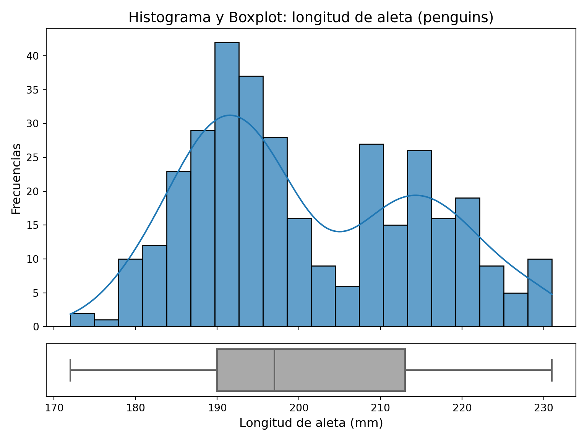
El boxplot es muy útil para resumir grandes cantidades de información, pero cuando el número de puntos es bajo puede resultarnos más útil la visualización mediante gráficos que muestren los puntos individuales. Entre estas visualizaciones, el gráfico tipo beeswarm puede utilizarse en Python mediante la función swarmplot() de seaborn, o en R mediante la librería ggbeeswarm.
library(palmerpenguins)
library(ggplot2)
library(ggbeeswarm)
ggplot(penguins, aes(x = "", y = flipper_length_mm)) +
geom_beeswarm(size = 1.5, color = "darkblue", cex = 1.5) +
labs(
title = "Beeswarm: longitud de aleta",
x = "",
y = "Longitud de aleta (mm)"
) +
theme_minimal()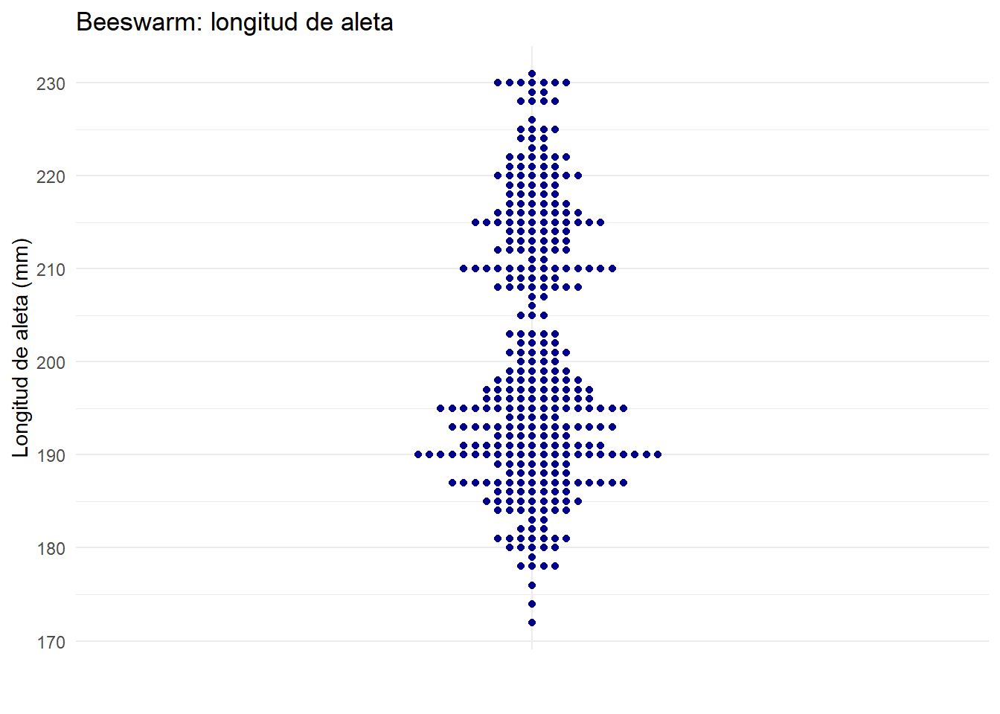
from palmerpenguins import load_penguins
import seaborn as sns
import matplotlib.pyplot as plt
penguins = load_penguins()
sns.swarmplot(data=penguins, y='flipper_length_mm', size=3)
plt.title('Beeswarm: longitud de aleta')
plt.ylabel('Longitud de aleta (mm)')
plt.tight_layout()
plt.show()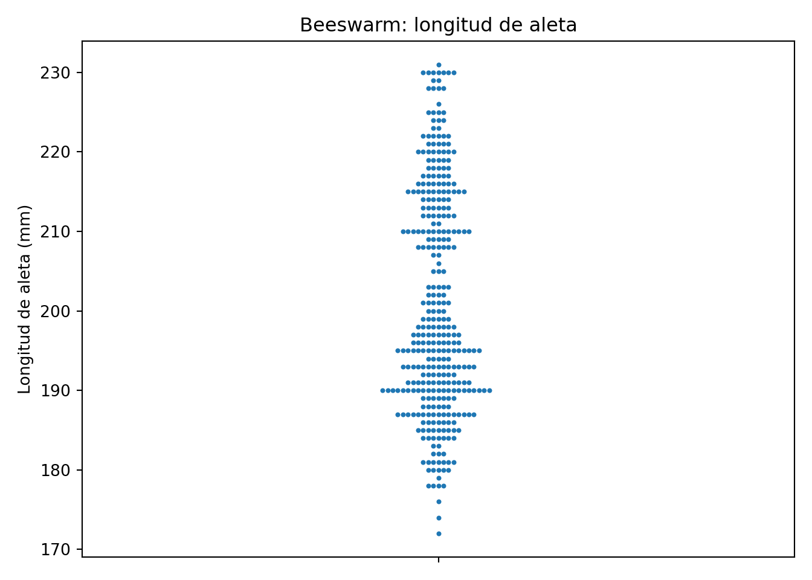
El beeswarm nos da una distribución aproximada de los valores individuales, colocándolos de forma que se eviten solapamientos.
El stripplot muestra los puntos en distribución vertical sobre las categorías; para evitar que los puntos con la misma coordenada se solapen, utilizamos la opción jitter, que introduce un pequeño ruido aleatorio horizontal.
library(palmerpenguins)
library(ggplot2)
ggplot(penguins, aes(x = "", y = flipper_length_mm)) +
geom_jitter(width = 0.1, size = 1.5, color = "darkblue", alpha = 0.6) +
labs(
title = "Longitud de aleta",
subtitle = "Dotplot con jitter",
x = "",
y = "Longitud de aleta (mm)"
) +
theme_minimal()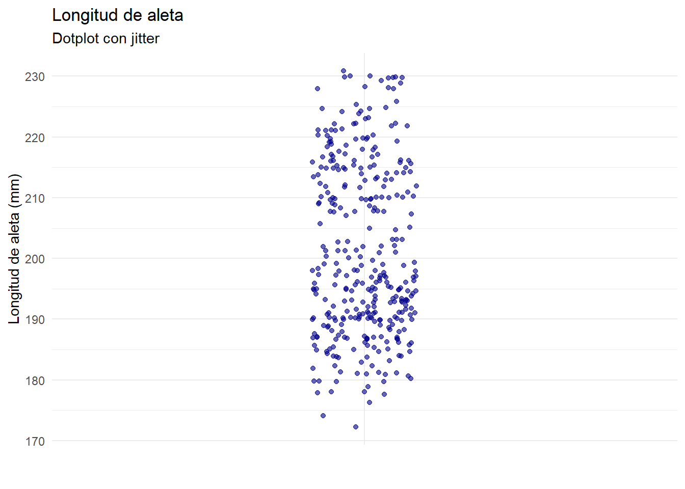
from palmerpenguins import load_penguins
import seaborn as sns
import matplotlib.pyplot as plt
penguins = load_penguins()
sns.stripplot(data=penguins, y='flipper_length_mm', jitter=True, size=3)
plt.title('Dotplot con jitter: longitud de aleta')
plt.ylabel("Longitud de aleta (mm)")
plt.tight_layout()
plt.show()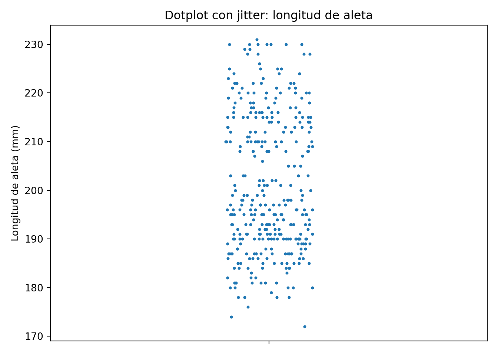
Estos diagramas pueden superponerse al boxplot, lo que nos permite completar la visualización de los puntos y la interpretación que hace el boxplot de su distribución.
library(palmerpenguins)
library(ggplot2)
library(ggbeeswarm)
ggplot(penguins, aes(x = "", y = flipper_length_mm)) +
geom_boxplot(width = 0.3, fill = "lightgray", outlier.shape = NA) +
geom_beeswarm(color = "darkblue", size = 1.5, cex = 1.5, alpha = 0.4) +
labs(
title = "Boxplot + Beeswarm: longitud de aleta",
x = "",
y = "Longitud de aleta (mm)"
) +
theme_minimal()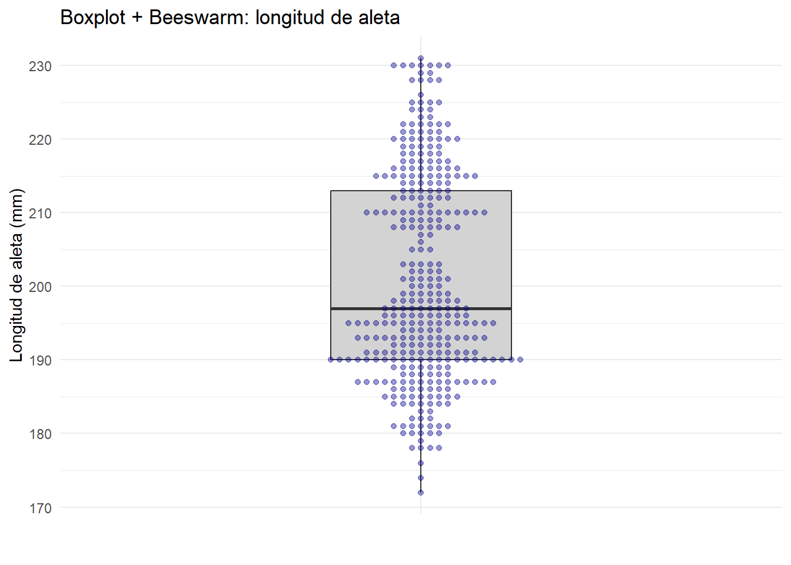
library(palmerpenguins)
library(ggplot2)
ggplot(penguins, aes(x = "", y = flipper_length_mm)) +
geom_boxplot(width = 0.3, fill = "lightgray", outlier.shape = NA) +
geom_jitter(width = 0.1, size = 1.5, color = "darkblue", alpha = 0.4) +
labs(
title = "Longitud de aleta",
subtitle = "Boxplot + Dotplot con jitter",
x = "",
y = "Longitud de aleta (mm)"
) +
theme_minimal()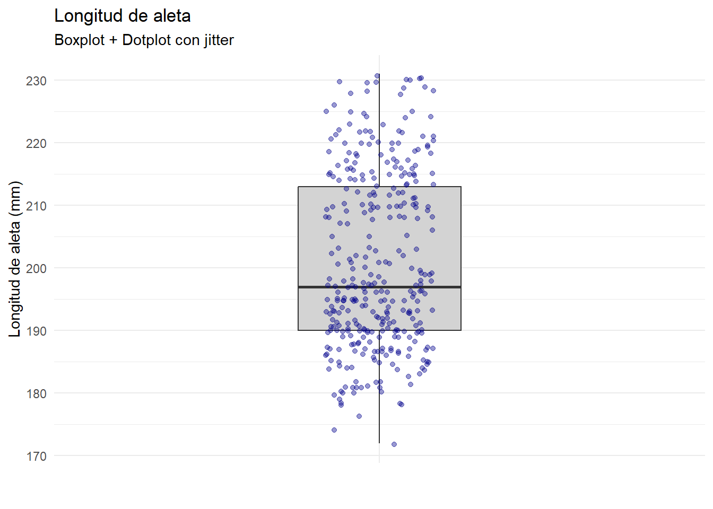
from palmerpenguins import load_penguins
import seaborn as sns
import matplotlib.pyplot as plt
penguins = load_penguins()
sns.boxplot(data=penguins, y='flipper_length_mm', width=0.2, color='lightgray')
sns.swarmplot(data=penguins, y='flipper_length_mm', size=2)
plt.title('Boxplot + Beeswarm: longitud de aleta')
plt.ylabel("Longitud de aleta (mm)")
plt.tight_layout()
plt.show()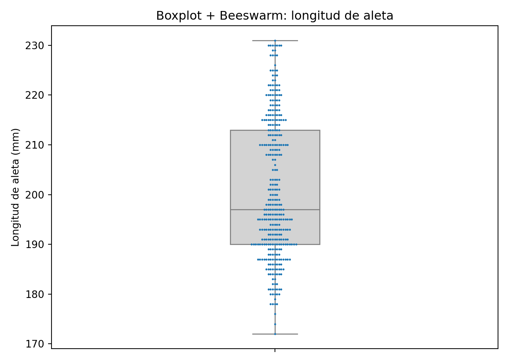
from palmerpenguins import load_penguins
import seaborn as sns
import matplotlib.pyplot as plt
penguins = load_penguins()
sns.boxplot(data=penguins, y='flipper_length_mm', color='lightgray', width=0.3, fliersize=0)
sns.stripplot(data=penguins, y='flipper_length_mm', jitter=True, size=3, color='darkblue', alpha=0.5)
plt.title('Boxplot + Stripplot: longitud de aleta')
plt.ylabel("Longitud de aleta (mm)")
plt.tight_layout()
plt.show()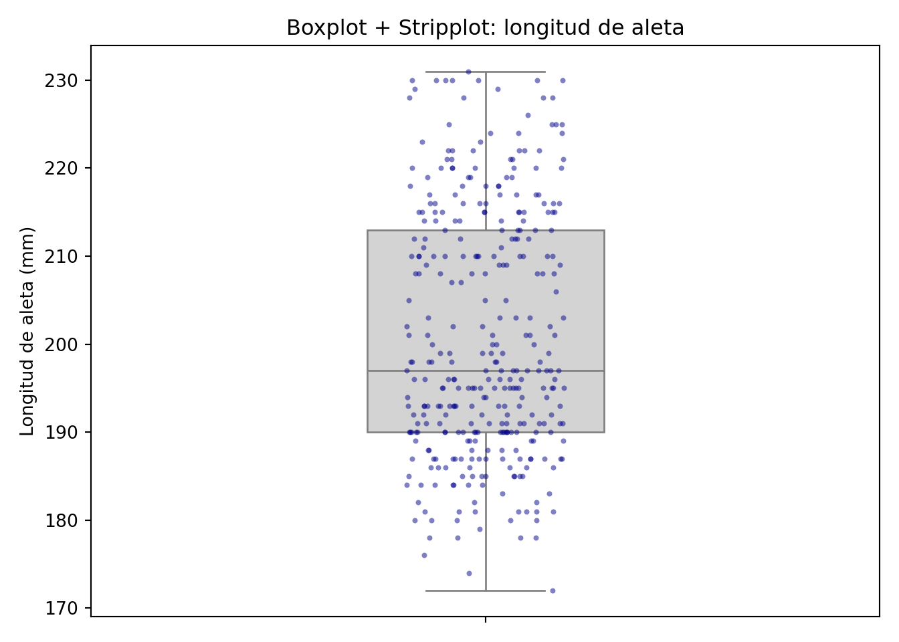
Un gráfico de densidad es una representación visual suavizada de la distribución de un conjunto de datos. A diferencia de los histogramas, que dividen los datos en intervalos y cuentan las frecuencias, los gráficos de densidad utilizan técnicas estadísticas no paramétricas para estimar la función de densidad de probabilidad.
Excel no permite la representación de los gráficos de densidad; en Python utilizamos seaborn y en R utilizamos ggplot2.
Los gráficos de densidad son especialmente útiles cuando estamos comparando diferentes grupos de datos entre sí. En este caso comparamos la longitud de aleta de los pingüinos por especie:
library(palmerpenguins)
library(ggplot2)
ggplot(penguins, aes(x = flipper_length_mm, fill = species, color = species)) +
geom_density(alpha = 0.2, linewidth = 1, adjust = 1) +
labs(
title = "Curva de densidad de la longitud de aleta por especie",
x = "Longitud de aleta (mm)",
y = "Densidad",
fill = "Especie",
color = "Especie"
) +
theme_minimal() +
theme(panel.grid.minor = element_blank())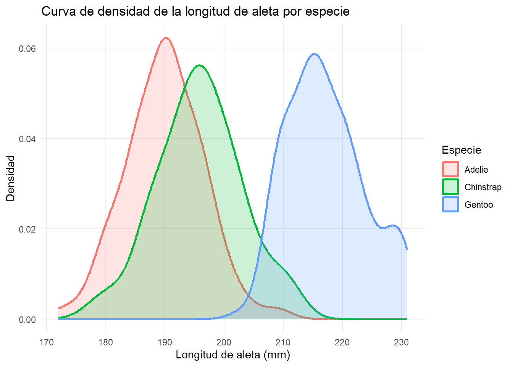
from palmerpenguins import load_penguins
import seaborn as sns
import matplotlib.pyplot as plt
penguins = load_penguins()
plt.figure(figsize=(10, 6))
sns.kdeplot(
data=penguins,
x='flipper_length_mm',
hue='species',
fill=True,
alpha=0.2,
linewidth=2
)
plt.title('Curva de densidad de la longitud de aleta por especie', fontsize=16)
plt.xlabel('Longitud de aleta (mm)', fontsize=12)
plt.ylabel('Densidad', fontsize=12)
plt.grid(axis='y', linestyle='--', alpha=0.6)
plt.show()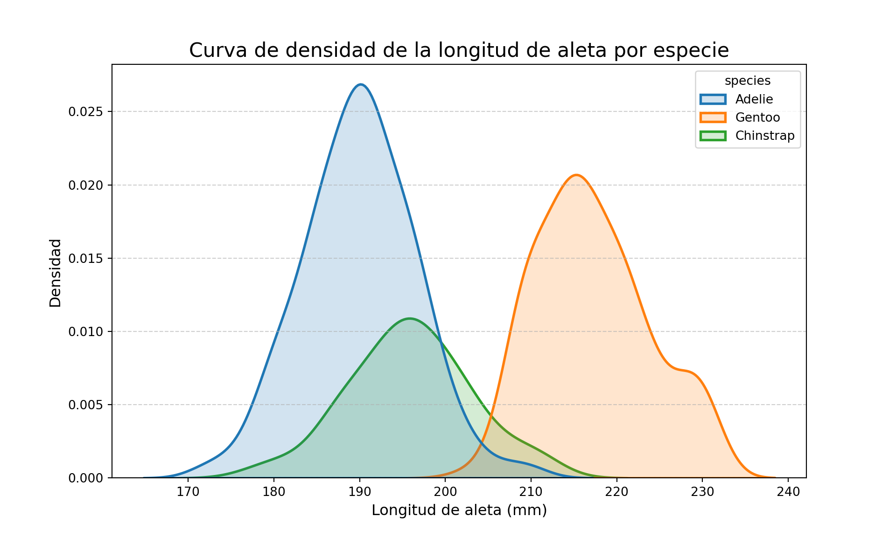
Los gráficos de densidad confirman la bimodalidad que observamos en el histograma: las especies Adelie y Chinstrap tienen distribuciones solapadas con aletas más cortas, mientras que Gentoo tiene aletas claramente más largas.
El violin plot es una alternativa al boxplot que tiene la ventaja de mostrar la densidad de la distribución superpuesta al boxplot, lo que permite visualizar con más claridad la distribución de los datos:
library(palmerpenguins)
library(ggplot2)
ggplot(penguins, aes(x = "", y = flipper_length_mm)) +
geom_violin(fill = "lightgray", color = "grey") +
geom_boxplot(width = 0.1, fill = "white", color = "black", outlier.shape = NA) +
labs(
title = "Violin plot: longitud de aleta",
x = "",
y = "Longitud de aleta (mm)"
) +
theme_minimal()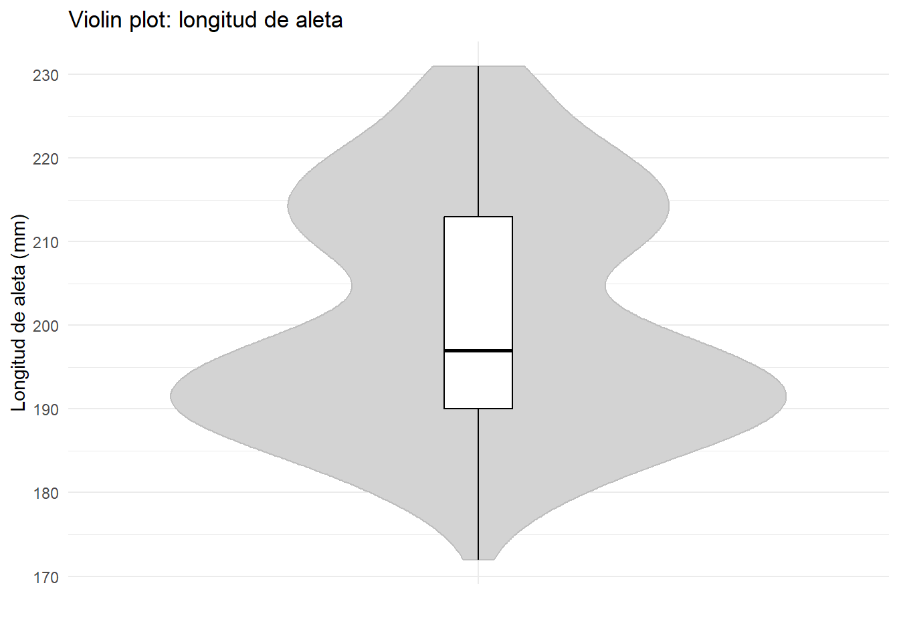
from palmerpenguins import load_penguins
import seaborn as sns
import matplotlib.pyplot as plt
penguins = load_penguins()
sns.violinplot(y='flipper_length_mm', data=penguins)
plt.title('Violin plot: longitud de aleta')
plt.ylabel("Longitud de aleta (mm)")
plt.tight_layout()
plt.show()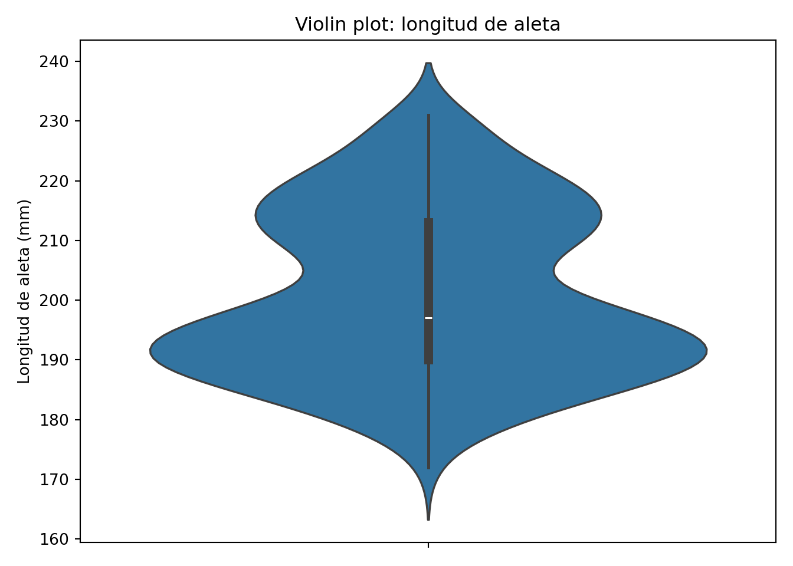
Tanto el violin plot como el boxplot se usan muy a menudo para comparar distribuciones de datos. El violin plot múltiple por especie muestra con claridad las diferencias que ya observamos en los gráficos de densidad:
library(palmerpenguins)
library(ggplot2)
ggplot(penguins, aes(x = species, y = flipper_length_mm, fill = species)) +
geom_violin(alpha = 0.4, color = "black") +
geom_boxplot(width = 0.1, fill = "white", outlier.shape = NA) +
labs(
title = "Violin plot por especie: longitud de aleta",
x = "Especie",
y = "Longitud de aleta (mm)"
) +
theme_minimal() +
theme(legend.position = "none")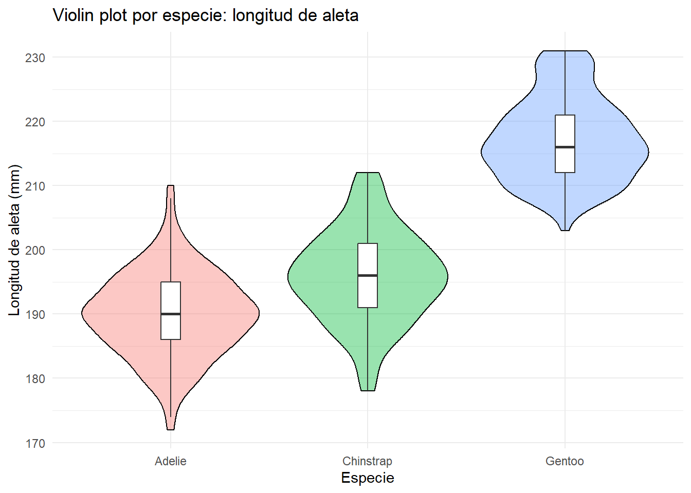
from palmerpenguins import load_penguins
import seaborn as sns
import matplotlib.pyplot as plt
penguins = load_penguins()
sns.violinplot(x='species', y='flipper_length_mm', data=penguins, alpha=0.4)
plt.title('Violin plot por especie: longitud de aleta')
plt.xlabel("Especie")
plt.ylabel("Longitud de aleta (mm)")
plt.tight_layout()
plt.show()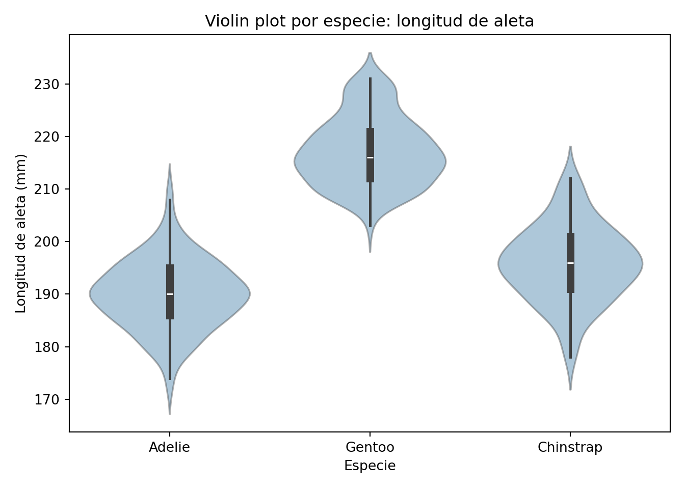
Un gráfico de dispersión, también conocido como diagrama de dispersión o scatter plot, es una representación gráfica que utiliza puntos para mostrar la relación entre dos variables numéricas. Cada punto en el gráfico representa una observación del conjunto de datos y se coloca en el plano cartesiano de acuerdo con sus valores en las dos variables que se están comparando.
Los gráficos de dispersión son útiles para identificar varios aspectos de la relación entre las dos variables:
Representamos la longitud de aleta y el peso corporal de los pingüinos del dataset penguins:
library(palmerpenguins)
library(ggplot2)
ggplot(penguins, aes(x = flipper_length_mm, y = body_mass_g)) +
geom_point(alpha = 0.7) +
labs(
title = "Relación entre longitud de aleta y peso corporal",
x = "Longitud de aleta (mm)",
y = "Peso corporal (g)"
) +
theme_minimal()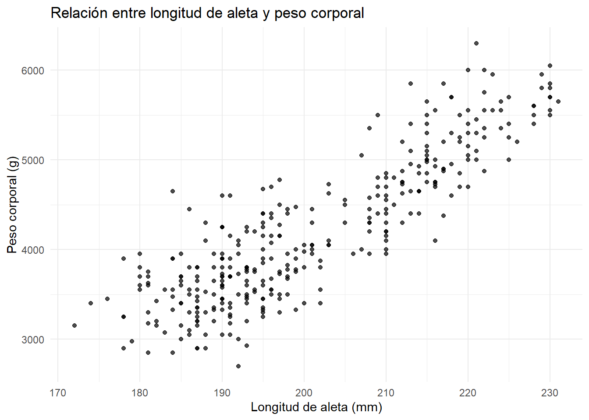
from palmerpenguins import load_penguins
import seaborn as sns
import matplotlib.pyplot as plt
penguins = load_penguins()
sns.scatterplot(data=penguins, x='flipper_length_mm', y='body_mass_g')
plt.title('Relación entre longitud de aleta y peso corporal')
plt.xlabel('Longitud de aleta (mm)')
plt.ylabel('Peso corporal (g)')
plt.show()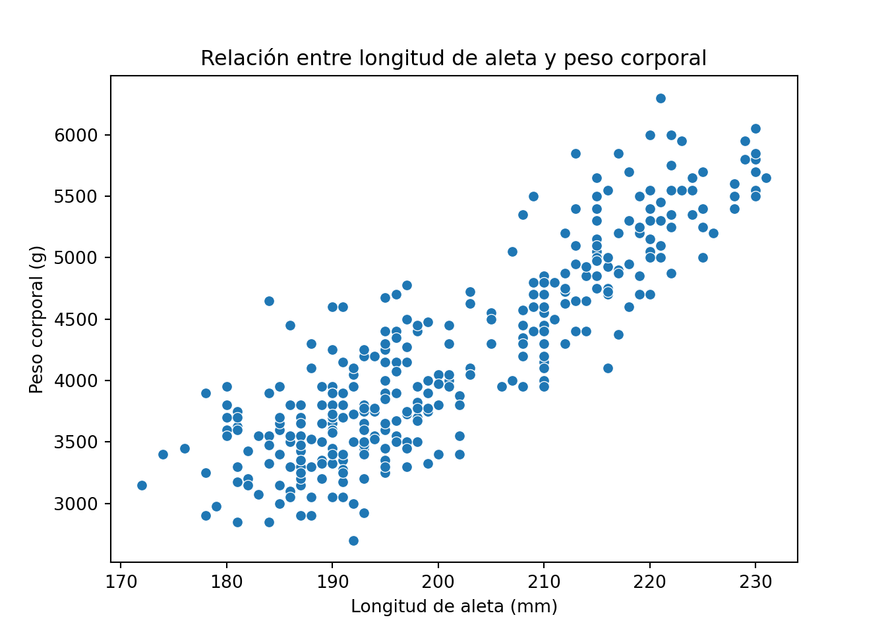
Tanto Python como R nos permiten separar el diagrama de dispersión en función de una tercera variable, en este caso la especie:
library(palmerpenguins)
library(ggplot2)
ggplot(penguins, aes(x = flipper_length_mm, y = body_mass_g, color = species)) +
geom_point(size = 2, alpha = 0.8) +
labs(
title = "Relación entre longitud de aleta y peso corporal por especie",
x = "Longitud de aleta (mm)",
y = "Peso corporal (g)",
color = "Especie"
) +
theme_minimal()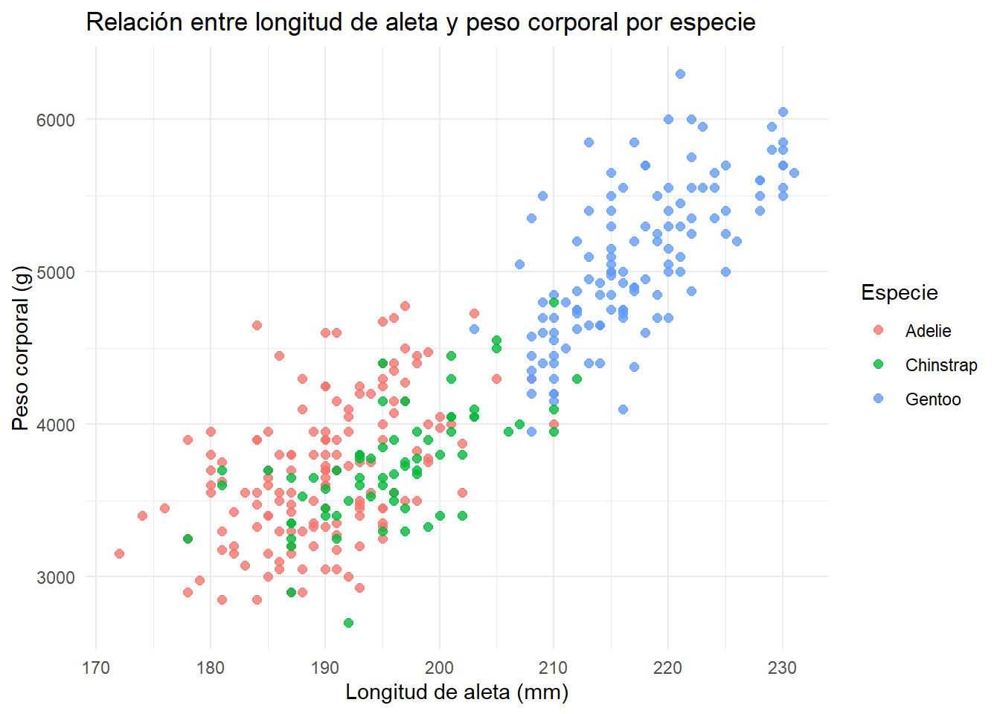
from palmerpenguins import load_penguins
import seaborn as sns
import matplotlib.pyplot as plt
penguins = load_penguins()
plt.figure(figsize=(9, 6))
sns.scatterplot(data=penguins, x='flipper_length_mm', y='body_mass_g',
hue='species', s=60, alpha=0.7)
plt.title('Relación entre longitud de aleta y peso corporal por especie')
plt.xlabel('Longitud de aleta (mm)')
plt.ylabel('Peso corporal (g)')
plt.legend(title='Especie')
plt.grid(True, linestyle='--', alpha=0.7)
plt.show()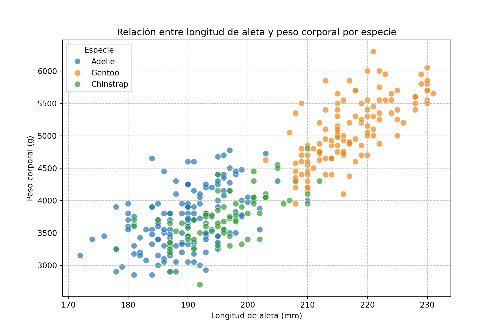
Los gráficos de dispersión multiserie no son nativos en Microsoft Excel, pero pueden hacerse con algo de trabajo manual, un poco más complejo que el procedimiento en Python o R (ver el procedimiento aquí y aquí, y un vídeo con el procedimiento detallado aquí).
Como vemos, los gráficos de dispersión son una herramienta esencial en el análisis exploratorio de datos, ya que permiten visualizar relaciones y patrones, identificar correlaciones y detectar posibles anomalías.
Hasta ahora hemos utilizado gráficos y tablas que describen la estructura y forma de una variable, o las relaciones entre dos variables. Hay otros gráficos que tienen en cuenta la forma en la que esos datos cambian con el tiempo. En este caso, será necesario que hayamos recogido en una variable de nuestra tabla los intervalos de tiempo en los que se han producido nuestros valores.
Algunos ejemplos:
En un gráfico de series temporales:
Cuando representamos valores en el tiempo, nunca usaremos el diagrama de barras, sino el gráfico de líneas.
Usaremos el dataset de temperatura media mensual de Oviedo entre 2020 y 2024, que está en el fichero oviedo_temperatura.csv. Este dataset contiene la temperatura media mensual registrada en Oviedo entre 2020 y 2024, con un total de 60 observaciones. Los datos proceden de los registros de AEMET (Agencia Estatal de Meteorología) y se han utilizado por su proximidad geográfica y por ilustrar con claridad dos patrones habituales en las series temporales industriales: la estacionalidad regular (el ciclo anual de temperaturas) y la tendencia a largo plazo, en este caso un ligero incremento de las temperaturas medias a lo largo del período.
Para hacer el gráfico en Excel, seleccionamos la columna temperatura e insertamos un gráfico de líneas. A continuación, con el cursor sobre el gráfico, pulsamos el botón derecho y seleccionamos la opción Seleccionar datos. Una vez abierto el cuadro de opciones, editamos las etiquetas del eje X y seleccionamos el rango de la variable fecha desde la fila 2 hasta la última. Aceptamos, y a continuación editamos el formato del eje Y para ajustar la escala a los valores de temperatura.
Python utilizando pandasEn los procesos industriales, el manejo de datos que cambian con el tiempo (series temporales) es fundamental. Hablamos de registrar temperaturas en un proceso de cocción, el pH de una fermentación a lo largo de las horas o días, o la evolución de inventarios de productos perecederos.
Para abordar este análisis de manera eficiente y sencilla, la biblioteca pandas de Python es la herramienta de referencia. Esto nos ofrece una serie de ventajas clave:
rolling): Permite calcular promedios móviles o desviaciones estándar sobre un periodo de tiempo definido, crucial para el control de calidad.pandasimport pandas as pd
import seaborn as sns
import matplotlib.pyplot as plt
df_temp = pd.read_csv("datos/oviedo_temperatura.csv",
sep=';',
decimal=',')
df_temp['fecha'] = pd.to_datetime(
df_temp['fecha'],
format='%d/%m/%Y',
errors='coerce'
)
df_temp.info()<class 'pandas.core.frame.DataFrame'>
RangeIndex: 60 entries, 0 to 59
Data columns (total 2 columns):
# Column Non-Null Count Dtype
--- ------ -------------- -----
0 fecha 60 non-null datetime64[ns]
1 temperatura 60 non-null float64
dtypes: datetime64[ns](1), float64(1)
memory usage: 1.1 KBdf_temp.head() fecha temperatura
0 2020-01-01 9.2
1 2020-02-01 9.8
2 2020-03-01 11.4
3 2020-04-01 11.6
4 2020-05-01 14.2Creamos el índice temporal y representamos la serie:
df_temp['fecha_index'] = pd.DatetimeIndex(df_temp.fecha).normalize()
df_temp.set_index('fecha_index', inplace=True)
df_temp.sort_index(inplace=True)
df_temp["temperatura"].plot()
plt.ylabel("Temperatura media (°C)")
plt.title("Temperatura media mensual en Oviedo 2020-2024")
plt.show()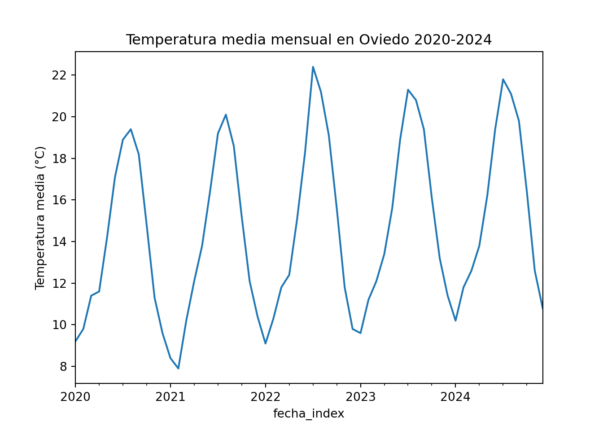
El gráfico muestra con claridad la estacionalidad anual: temperaturas bajas en invierno y altas en verano, con un patrón que se repite cada año. Además, si observamos con atención, podemos apreciar una ligera tendencia creciente a lo largo del período, que refleja el calentamiento registrado en los últimos años. Los gráficos de series temporales son capaces de mostrar simultáneamente estos dos patrones: la variación estacional a corto plazo y la tendencia a largo plazo.
Podemos calcular y representar la media anual para visualizar mejor la tendencia:
plt.figure(figsize=(10.0, 3.0))
df_temp["temperatura"].resample('YE').mean().plot(
title="Temperatura media anual en Oviedo 2020-2024",
marker='o')
plt.ylabel("Temperatura media (°C)")
plt.show()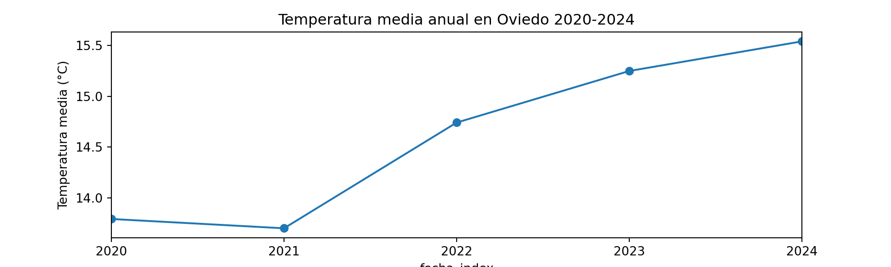
Y podemos hacer zoom en un período concreto para analizar con más detalle:
plt.figure(figsize=(10.0, 3.0))
df_temp["temperatura"]["2022":"2023"].plot(
title="Temperatura media mensual en Oviedo 2022-2023")
plt.ylabel("Temperatura media (°C)")
plt.show()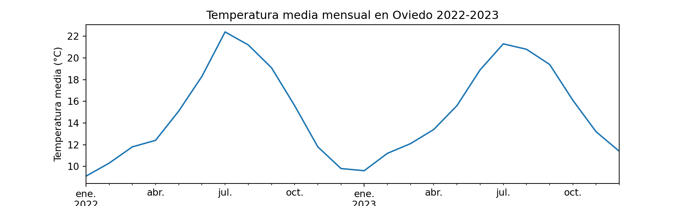
Se recomienda copiar el código y pegarlo en ChatGPT o Gemini para explicarlo en detalle. Utiliza el texto de la nota de aviso que dimos al principio del capítulo para pedir que explique el código.
A continuación, el gráfico realizado con R.
library(ggplot2)
library(dplyr)
library(lubridate)
df_temp <- read.csv2("datos/oviedo_temperatura.csv",
dec = ",")
df_temp$fecha <- dmy(df_temp$fecha)
ggplot(df_temp, aes(x = fecha, y = temperatura)) +
geom_line(color = "steelblue", linewidth = 1) +
geom_smooth(method = "lm", se = FALSE, color = "red",
linetype = "dashed", linewidth = 0.8) +
labs(
title = "Temperatura media mensual en Oviedo 2020-2024",
subtitle = "La línea roja muestra la tendencia general",
x = "Fecha",
y = "Temperatura media (°C)"
) +
theme_bw()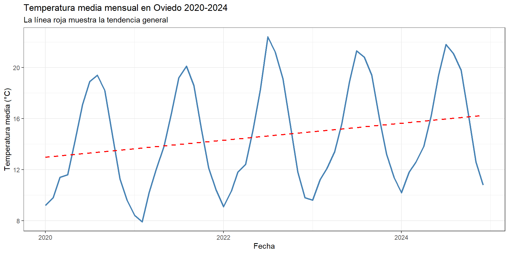
Los gráficos de series temporales son la herramienta fundamental para el seguimiento y control de los procesos industriales. Permiten identificar tendencias a largo plazo, detectar estacionalidad (variaciones ligadas al ciclo productivo o a la época del año) y localizar anomalías puntuales que pueden indicar incidencias en el proceso o errores en la toma de datos. En la industria alimentaria, donde variables como temperatura, pH, extracto seco o rendimiento se registran de forma continua o periódica, la representación temporal es con frecuencia el primer paso del análisis antes de aplicar cualquier otra herramienta estadística.
Algunos sitios tienen ejemplos de gráficos que puede resultar útil revisar:
matplotlib, gran cantidad de ejemplos en Pythonseaborn, una extensa galería de gráficos hechos con esta librería Pythontidyplots en R para realizar de forma sencilla gran cantidad de gráficos, simplificando la sintaxis de ggplot2.Una de las guías más conocidas y seguidas para la creación de gráficos es el vocabulario visual del Financial Times
También esta guía proporciona información sobre el uso adecuado de cada tipo de gráfico, facilitando la elección según el objetivo perseguido
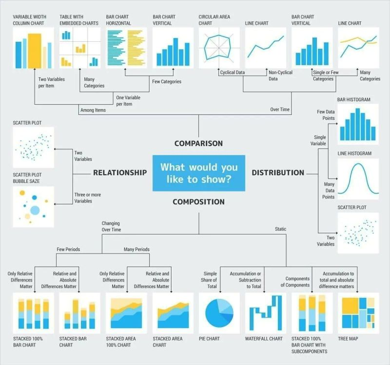

La visualización gráfica es la herramienta más directa para explorar un conjunto de datos antes de aplicar cualquier análisis estadístico. El stemplot permite obtener una visión rápida de la distribución de datos pequeños manteniendo los valores originales, aunque su uso ha quedado desplazado por herramientas gráficas más potentes. Las tablas de distribución de frecuencias organizan los datos en intervalos y permiten calcular frecuencias absolutas, relativas y acumuladas; pueden construirse en Excel mediante tablas dinámicas, o en Python y R mediante código reproducible y auditable.
El histograma es el gráfico estándar para representar la distribución de variables continuas. La forma del histograma nos informa sobre la naturaleza de los datos: una distribución simétrica indica homogeneidad, una distribución asimétrica señala que los valores extremos son frecuentes en uno de los lados, y una distribución bimodal revela la presencia de dos grupos distintos mezclados en los datos. El diagrama de barras se reserva para variables discretas o categóricas. El boxplot resume la distribución mediante cinco números (mínimo, Q1, mediana, Q3, máximo), refleja la forma de la distribución a través de la posición de la mediana y la longitud de los bigotes, y señala automáticamente los valores atípicos; con pocos datos es preferible usar el dotplot, que muestra los valores individuales. Para conjuntos de datos mayores pueden utilizarse alternativas como el beeswarm, el stripplot o el violin plot, que combinan el resumen estadístico con la visualización de los puntos individuales.
Los gráficos de densidad, disponibles en Python mediante seaborn y en R mediante ggplot2, ofrecen una representación suavizada de la distribución y resultan especialmente útiles para comparar grupos. Los gráficos de dispersión permiten visualizar la relación entre dos variables numéricas e identificar correlaciones, relaciones no lineales y valores atípicos; Python y R facilitan la segmentación por una tercera variable, lo que en Excel requiere un trabajo manual adicional. Los gráficos de series temporales representan la evolución de una variable en el tiempo y permiten identificar simultáneamente la estacionalidad y la tendencia a largo plazo; pandas en Python proporciona funciones de remuestreo que simplifican este análisis, con equivalentes en R mediante dplyr y lubridate. El capítulo concluye con referencias a galerías de ejemplos en Python y R y a guías de selección del tipo de gráfico según el objetivo del análisis.
{kind=link}